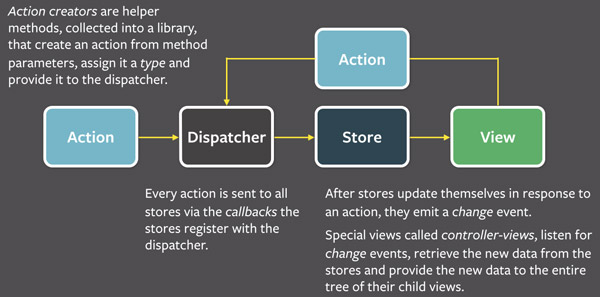

一个小小的分享
分享内容概览
关于TWX
- TWX的整体目录结构
- 单个页面html和js的架构（lua模板+js）
- 关于js的doc文档(两个全局对象，和几个拥有不同功能的子对象)
应用在TWX页面中的架构
- flux架构
- flux在TWX中的应用---缩减版demo（数据驱动模型与dataStore）
小常识
- ajax的异常处理，与递归调用
- 如何用js函数去创建一个对象，并为此函数扩展属性
- js闭包的简单应用
- setTimeout和setInterval与js的事件驱动机制（js与浏览器进程间的交互）
- 关于js的跨域（介绍：服务端添加response的http首部来避免跨域）
- 关于js中的假值，所引起的异常判断
Q & A
TWX的整体目录结构
- 页面访问流程：http ==> dns(解析到路由器本地) ==> nginx ==> fcgi ==> luci
- 服务端脚本语言： lua
- twx的src下目录的文件结构 与 路由器 的根目录结构是一致的
twx
└── src
├── etc
│ ├── agreement ---首次安装的状态位配置文件
│ ├── init.d ---自启动脚本文件夹
│ │ ├── build_i18n ---生成js的i18n文件
│ │ └── build_loginpage ---生成静态登陆页
├── usr
│ └── lib
│ └── lua
│ └── luci
│ ├── dispatcher.lua ---luci的调度函数文件
│ ├── util.lua
│ ├── version.lua ---版本配置文件，页面引用静态文件时用到了它里面的值。如：？v=<%=ver.svnRevNum%>
│ ├── controller ---twx页面与twx自身api的调度与实现
│ │ ├── admin_mobile
│ │ │ └── index.lua
│ │ ├── admin_web
│ │ │ ├── guide.lua
│ │ │ ├── index.lua
│ │ │ └── login.lua
│ │ ├── admin_wp
│ │ │ └── index.lua
│ │ ├── api
│ │ │ ├── index.lua
│ │ │ └── ...
│ │ └── guide_v2
│ │ ├── guide.lua
│ │ └── index.lua
│ ├── ...
│ ├── i18n ---i18n语言包
│ │ ├── eng.lua
│ │ ├── oem.lua
│ │ └── zh_cn.lua
│ ├── i18n.lua ---i18n对外函数功能实现
│ ├── local_ssh ---本地ssh的功能实现
│ │ ├── local_ssh.lua
│ │ └── local_ssh_util.lua
│ └── view
│ ├── admin_mobile ---移动端页面的html模板文件
│ │ ├── footer.htm ---html公共尾文件
│ │ ├── header.htm ---html公共头文件
│ │ ├── home.htm
│ │ ├── sysauth.htm
│ │ ├── network
│ │ │ └── ...
│ │ ├── system
│ │ │ └── ...
│ │ └── wifi
│ │ ├── index.htm
│ │ └── wifi_setup.htm
│ ├── admin_web ---pc端页面的html模板文件
│ │ ├── footer.htm ---html公共尾文件
│ │ ├── header.htm ---html公共头文件
│ │ ├── home.htm
│ │ ├── ap ---路由器为ap时的网络诊断页面
│ │ │ ├── diagnose.htm
│ │ │ └── error.htm
│ │ ├── menu
│ │ │ └── menu_left.htm ---pc端页面的左侧菜单
│ │ ├── network
│ │ │ ├── index.htm ---文件夹中的其他页面被include到此页面
│ │ │ └── ...
│ │ ├── passport
│ │ │ ├── apps.htm
│ │ │ └── guarantee.htm
│ │ ├── plugin
│ │ │ ├── hua_san.htm
│ │ │ ├── index.htm
│ │ │ ├── logs.htm
│ │ │ └── rui_jie.htm
│ │ ├── safe
│ │ │ ├── black_list.htm
│ │ │ ├── index.htm ---文件夹中的其他页面被include到此页面
│ │ │ └── white_list.htm
│ │ ├── storage
│ │ │ ├── index.htm
│ │ │ └── samba.htm
│ │ ├── system
│ │ │ ├── index.htm ---文件夹中的其他页面被include到此页面
│ │ │ └── ...
│ │ └── wifi
│ │ ├── index.htm ---文件夹中的其他页面被include到此页面
│ │ └── ...
│ └── guide_v2 ---首次安装页面的html模板文件
│ ├── agreement.htm ---系统中唯一的路由器使用协议
│ ├── footer.htm ---html公共尾文件
│ ├── header.htm ---html公共头文件
│ ├── index.htm ---首次安装入口
│ ├── first.htm ---首次安装入口
│ └── ...
└── www
├── index.html ---twx入口文件
├── favicon.ico
├── 404.html
├── 500.html
├── local_ssh.html ---本地ssh入口文件
├── login_mobile_backup.html
├── login_mobile.html --静态登陆文件
├── login_web_backup.html
├── login_web.html --静态登陆文件
├── net_detect.html --网络诊断入口文件
├── robots.txt ---组织twx页面被爬虫抓取
├── cgi-bin
│ ├── proxy-cgi ---twx调用openapi时的代理cgi
│ └── turbo
├── demo
│ └── ...
└── turbo-static
└── turbo
└── v2
├── img
│ ├── 2.4g@2x.png ---pc端图片
│ ├── ...
│ ├── admin_mobile ---移动端图片
│ │ ├── ad-close.png
│ │ ├── ...
│ ├── guide ---首次安装图片
│ │ ├── an.png
│ │ ├── ...
│ ├── net_detect_mobile
│ │ ├── arrow-back.png
│ │ ├── ...
│ ├── net_detect_web
│ │ ├── arrow.png
│ │ ├── ...
├── js
│ ├── g.js ---提供全局对象HiWiFi
│ ├── onerror.js ---js错误捕获，置前加载
│ ├── admin_mobile
│ │ ├── general_module.js ---通用页面的逻辑处理
│ │ ├── g.js ---独属于移动端模块的公共函数，HiWiFi对象的扩展
│ │ ├── home.js
│ │ └── ...
│ ├── admin_web
│ │ ├── general_module.js ---通用页面的逻辑处理
│ │ ├── g.js ---独属于web端模块的公共函数，HiWiFi对象的扩展
│ │ ├── home.js
│ │ └── ...
│ ├── boot_loader ---基础js类库，全局依赖的js库
│ │ ├── jquery.min.js
│ │ ├── json3.min.js
│ │ └── require.min.js ---一个JavaScript文件或者模块的加载器，暂未使用
│ ├── guide
│ │ └── ....
│ ├── i18n ---国际化js文件占位文件夹，里面的文件在路由器启动时生成
│ ├── lib ---公共的js类库，非全局依赖
│ │ ├── dialog.js
│ │ ├── jquery.datetimepicker.js
│ │ ├── jquery.validate.config.js
│ │ ├── jquery.validate.js
│ │ └── pushstream.js
│ ├── openapi ---调用openapi接口的基于ajax的基础类库（twx中几乎所有的请求，都使用它）
│ │ └── openapi.js
│ └── readme.txt
└── style
├── admin_mobile ---移动端样式表
│ ├── g.css
│ └── net_detect.css
├── guide ---首次安装样式表
│ ├── 360.css
│ ├── ie8.css
│ ├── iphone4.css
│ └── ...
├── home.css ---pc端样式表
├── login.css
└── ...
单个页面html和js的架构
html模板的构成（lua + html）
1.页面中需要引入和执行的lua，写在文件头部
2.include('header')
3.引入样式表 href="../style/demo.css?v=<%=ver.svnRevNum%>"
4.引入其他子页面
...（本页html）
include('admin_web/menu/menu_left') ---引入pc端的左侧菜单（仅pc端模块主页面需引入）
...（本页html）
include('demo/demo1') ---引入其他子页面
...（本页html）
5.include('footer') ---js文件一定要放在html底部，因为js的执行会阻塞线程
...
6.引入通用模块的专属js文件： src=".../general_module.js?v=<%=ver.svnRevNum%>"
7.引入本页的专属js文件： src=".../demo.js?v=<%=ver.svnRevNum%>"
页面专属js文件的构成（每个页面都有其专属的js文件）
- 每个页面的结构都是这样的
- 页面展现中用到的所用的数据，都来自dataStore中已经定义的对象
- 页面逻辑中，用的到的所有接口 都在Interfaces列表 中
- 页面展现逻辑的对象中，它的每个方法都只负责页面中的一个局部模块的渲染
- 页面的初始化，和其他的事件，都定义在文件的底部，也就是Actions模块
- 文件整体呈现出 函数化 + 模块化
1.初始化数据仓库store
HiWiFi.dataStore({
demo_data: {
demo_name: ""
},
...
});
2.Interfaces列表（本页用到的所有的openapi接口）
//修改设备名称
function setDeviceName(request_data, successCallback, errorCallback) {
//...(写入数据类型 接口写前面)
}
...
//检查系统是否需要升级
function checkRomUpdate(muti_call) {
//...(读取数据类型 接口写后面)
//ajax回调函数中执行：HiWiFi.dataStore.updateData("demo_data",{...})
}
3.页面展现逻辑，依据dataStore中的数据模型，展现页面内容
var homeView = function () {
var controller_view = {
showViewRightInfo: function () {
var demo_data = HiWiFi.dataStore.getData("demo_data");
//...
if (demo_data.demo_name) {
//操作dom
}
},
...
};
//默认向controller_view中的函数添加dataStore事件监听
HiWiFi.dataStore.addChangeListenerFromCaller(controller_view);
return controller_view;
};
4.Actions
4.1初始化页面
var controller_view = homeView();
4.2定义各种事件
4.3配置各个表单的，验证规则和提示
flux架构
Flux是什么
Flux是Facebook用来构建客户端Web应用的应用架构。它利用 单向数据流 的方式来组合视图组件。它更像一个模式而不是一个正式的框架
单向数据流模型

-
dispatcher
事件调度中心，flux模型的中心枢纽，管理着Flux应用中的所有数据流。它本质上是Store的回调注册。每个Store注册它自己并提供一个回调函数。当Dispatcher响应Action时，通过已注册的回调函数，将Action提供的数据负载发送给应用中的所有Store。应用层级单例！！
-
store
负责封装应用的业务逻辑跟数据的交互。
Store中包含应用所有的数据 Store是应用中唯一的数据发生变更的地方 Store中没有赋值接口---所有数据变更都是由dispatcher发送到store，新的数据随着Store触发的change事件传回view。Store对外只暴露getter，不允许提供setter！！禁止在任何地方直接操作Store。
-
view
controller-view 可以理解成MVC模型中的controller，它一般由应用的顶层容器充当，负责从store中获取数据并将数据传递到子组件中。简单的应用一般只有一个controller-view，复杂应用中也可以有多个。controller-view是应用中唯一可以操作view(UI组件)的地方，职责单一只允许调用action触发事件，数据从由上层容器通过属性传递过来。
ajax的异常处理，与递归调用
在通过xmlHttpRequest对象时（同过ajax的非jsonp访问），处理异常是非常重要的，尤其是递归里调用ajax时。
- 推荐使用 $.ajax 的方式发起请求，保证代码格式统一，格式明了
- 对于每一个请求都应该认真对待它的每一个结果
var xhr = $.ajax({
url: “”,
cache: false,
type: "POST",
async: true, //同步会影响页面的渲染--此处选择异步
dataType: "json",
data: JSON.stringify(ajaxData),//对象转字符串，千万不要拼字符串
timeout: 20000,//超时是一定要定义的
context: callbacks_context//各个回调函数的父对象,防止上下文丢失
});
xhr.done(function (rsp, status, xhr) {
var callbacks = $(this)[0];
if (rsp.code === 0 || rsp.code === "0") {
if (typeof callbacks.success === "function") {
//执行成功回调
callbacks.success(rsp, status, xhr);
}
} else {
if (rsp.code === 99999 || rsp.code === "99999") {
if (typeof callbacks.noAuthError === "function") {
//执行没有登陆权限的回调函数
callbacks.noAuthError(rsp);
return false;
}
}
if (typeof callbacks.responseError === "function") {
//执行接口报错的回调函数
callbacks.responseError(rsp);
}
}
});
xhr.fail(function (e) {
var callbacks = $(this)[0];
if (e.status === 0) {
if (e.statusText === "abort") {
if (typeof callbacks.canceledError === "function") {
//http被取消时，所执行的回调函数（可能是浏览器取消的，或自己手动取消的）
callbacks.canceledError(e);
return false;
}
} else if (e.statusText === "timeout") {
if (typeof callbacks.timeoutError === "function") {
//接口超时 时执行的回调函数
callbacks.timeoutError(e);
return false;
}
}
}
if (typeof callbacks.requestError === "function") {
//在http请求失败，但没有失败原因时执行的回调
callbacks.requestError(rsp);
}
});
xhr.always(function (rsp) {
var callbacks = $(this)[0];
if (typeof callbacks.always === "function") {
//不论http请求成功或失败都应执行的回调
callbacks.always(rsp);
}
});
递归里调用，需要注意异常时是否需要再次调用
function demo(i) {
var xhr = $.ajax({
url: “”,
cache: false,
type: "POST",
...
});
xhr.done(function (rsp, status, xhr) {
//正常此处需要处理
demo(i++);
});
xhr.fail(function (e) {
//异常此处需要处理,确定是否需要重试
setTimeout(function() {
demo(i);
}, 500);
});
xhr.always(function (rsp) {
//不论成功失败，都继续递归
demo(i++);
});
}
如何用js函数去创建一个对象，并为此函数扩展属性
优点：
- 可以缩短函数在调用时书写的长度（如：$("#id")和$.each()都是JQuery函数的使用方式）
- 可以这样理解： $("#id") == $.initElement("#id") (ps:"initElement"是虚构的函数)
- 猜想下，下面代码的输出结果 ^_^ （js应用的是词法作用域哦！）
function demo() { demo.say(); demo.name = "kp"; demo.say(); }demo.name = "demo"; demo.say = function() { console.log(demo.name); } demo.sayNo = function() { console.log("no"); }
demo(); demo.sayNo();
- 可以了解下：jQuery.extend(target, object1, [objectN])的使用方式（向前合并对象,即：用一个或多个其他对象来扩展一个对象，返回被扩展的对象）
- 上面的例子用这个函数后，就可以写成这样了（模块化，利于扩展）
function demo() {
demo.say();
demo.name = "kp";
demo.say();
}
jQuery.extend(demo, {
name: "demo",
say: function() {
console.log(demo.name);
},
sayNo: function() {
console.log("no");
}
})
js闭包的简单应用
优点：
- 实际开发中可以用像下面这样的方式来创建对象来避免 new 关键字的使用（return返回的对象即为新生成的对象）
- 可以读取函数的内部变量--前提：通过函数对象提供的指定方法（数据私有化，保证数据安全）
- 这些变量的值会始终保持在内存中(可以用来缓存页面展现或操作过程中需要记录的值，而不会像全局变量似的造成变量污染)
function demo() { var cache = 0; return { addOne: function() { cache ++; }, show: function() { console.log(cache); } }; }
var dd = demo(); dd.addOne(); dd.addOne(); dd.show(); //2 dd.addOne(); dd.addOne(); dd.addOne(); dd.show(); //5